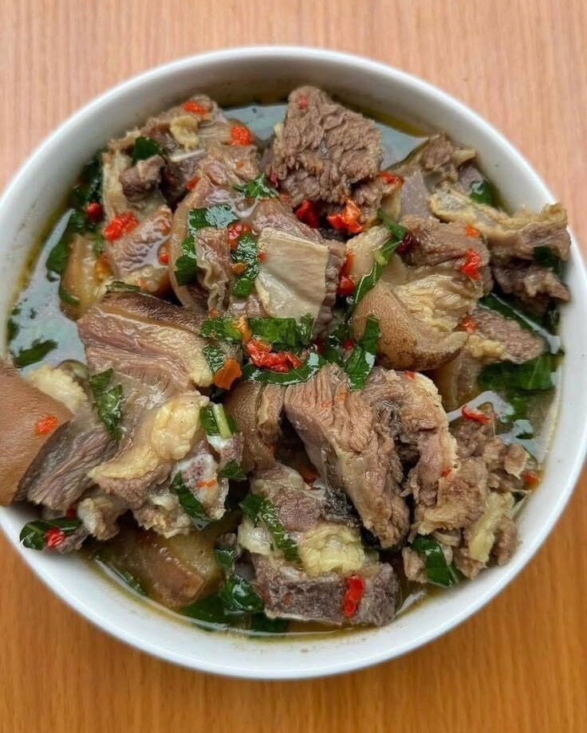

Food culture
Where: Nigeria, Ghana, Senegal, Côte d'Ivoire, Mali, Sierra Leone and more.
Across the region, meals are communal. A pot of jollof or a bowl of soup is placed in the middle, and everyone eats together. Heat is a point of pride, but it always comes with balance from sweet tomatoes, onions and plantain.

Staple ingredients
- Rice, millet and sorghum
- Yam, cassava and plantain
- Black-eyed peas and groundnuts (peanuts)
- Okra, leafy greens and tomatoes
- Palm oil and dried crayfish
Cooking techniques
- One-pot rice cooking, as in jollof
- Pounding yam or cassava into smooth fufu
- Slow stewing in a tomato-and-pepper base
- Charcoal grilling, famously suya skewers
- Deep-frying snacks like akara and puff-puff
Signature spices & flavours
- Scotch bonnet
- Ginger
- Thyme
- Suya spice (yaji)
- Locust beans (iru)
Example dishes
More to explore
- Egusi soup (melon seed stew)
- Fufu with light soup
- Suya (spiced grilled beef skewers)
- Waakye (rice and beans)
Watch: the food of West Africa
Video not loading? Watch on YouTube.